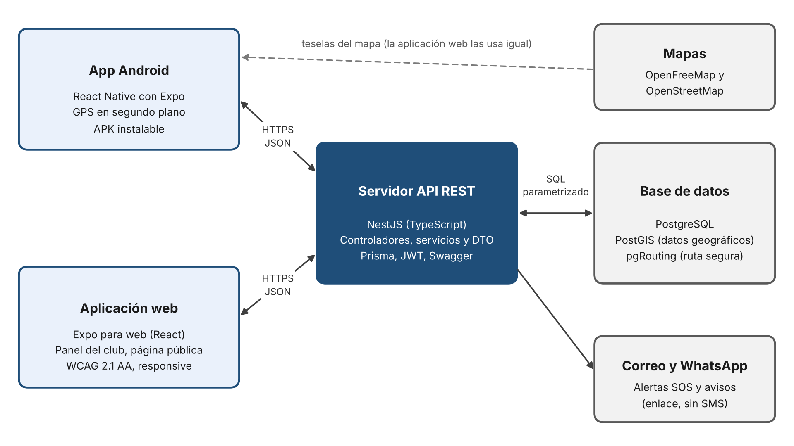

Aplicación web
Planificador, explorador público de rutas y espacios recomendados de Loja, panel del club y administración.
Ingeniería Web · UTPL · Oct 2026 – Feb 2027
Requisitos, tecnologías y propuesta de diseño del prototipo web y móvil para el Club Deportivo Gacelas Running Team, reunidos en una sola página.
01 Requisitos · Descripción
RUNCTY es un prototipo dirigido a los corredores y al Club Deportivo Gacelas Running Team que coloca la seguridad de la ruta y del horario como el elemento central de la planificación del entrenamiento. Esta versión funciona en la ciudad de Loja y queda preparada para habilitar otras ciudades en el futuro.
El corredor indica la distancia, el horario y su nivel (por ejemplo: 5 km, 05:30, principiante) y el sistema le recomienda las rutas establecidas de la ciudad ordenadas por su índice de seguridad, junto con los espacios recomendados disponibles a esa hora. Cada ruta muestra el nivel de sus tramos y los factores que lo determinan.
Durante el entrenamiento, la aplicación graba el recorrido con GPS y calcula su distancia, tiempo y ritmo. Por seguridad, el corredor puede compartir su recorrido en vivo con sus contactos de confianza mediante un enlace que caduca y enviarles una alerta SOS.
La comunidad aporta reportes de incidentes, que el club modera, y el club registra rutas, espacios, horarios recomendados, zonas de riesgo y los banners de sus patrocinadores. Las rutas personales y la ubicación del corredor son privadas por defecto.
Planificador, explorador público de rutas y espacios recomendados de Loja, panel del club y administración.
El corredor planifica y graba sus entrenamientos.
Calcula el índice de seguridad.
Prototipo funcional web y Android para los corredores de Loja y el Club Gacelas. Ambas aplicaciones comparten rutas, espacios recomendados, horarios y reportes. El índice de seguridad es referencial: ayuda a tomar decisiones informadas, sin garantizar que los recorridos estén libres de riesgos.
02 Requisitos · Usuarios
Cinco tipos de usuario. Abre cada tarjeta para ver sus principales responsabilidades y acciones.
Usuario final
Deportistas de nivel principiante, intermedio y avanzado, y personas que entrenan de madrugada o de noche.
Usuario gestor
Líderes de clubes de running, representantes de grupos deportivos u organizadores de entrenamientos comunitarios.
Usuario técnico
Personal técnico encargado de la gestión global, administración y mantenimiento de la plataforma.
Actor externo · sin cuenta
Familiares o amigos registrados por el corredor para recibir soporte en caso de emergencia.
Actor externo · sin cuenta
Cualquier persona que accede a la web pública de RUNCTY sin iniciar sesión.
03 Requisitos · Funcionales y no funcionales
Elige un grupo y abre cada requisito para ver su criterio de comprobación. Todos los requisitos funcionales tienen prioridad Debe tener.
El sistema deberá crear una cuenta con rol de corredor cuando un visitante envíe datos de registro válidos.
Criterio de comprobación: con datos válidos y edad mínima de 15 años, se crea una cuenta pendiente de verificar. Un correo duplicado se rechaza.
Prioridad: Debe tener
El sistema deberá activar la cuenta del corredor cuando este utilice un enlace de verificación vigente enviado a su correo.
Criterio de comprobación: un enlace válido activa la cuenta; uno vencido o usado no permite activarla.
Prioridad: Debe tener
El sistema deberá autenticar a un usuario registrado mediante su correo y contraseña, y habilitar las funciones de su rol.
Criterio de comprobación: un usuario activo con credenciales correctas accede a su rol; las credenciales incorrectas se rechazan.
Prioridad: Debe tener
La aplicación web deberá mostrar un mapa interactivo de Loja con las rutas y los espacios disponibles para los corredores.
Criterio de comprobación: el visitante puede desplazar y ampliar el mapa, y seleccionar una ruta o un espacio publicado.
Prioridad: Debe tener
La aplicación web deberá mostrar el catálogo público de rutas disponibles en Loja con su distancia y dificultad.
Criterio de comprobación: una persona sin cuenta puede consultar las rutas publicadas y distinguir su nombre, distancia y dificultad.
Prioridad: Debe tener
El sistema deberá mostrar la ficha de una ruta seleccionada con su trazado, horario recomendado e índice referencial para la hora consultada.
Criterio de comprobación: al seleccionar una ruta y una hora, se muestran el recorrido y los datos correspondientes a esa consulta.
Prioridad: Debe tener
La aplicación web deberá mostrar los espacios recomendados por el Club Gacelas con su ubicación y horarios de uso sugeridos.
Criterio de comprobación: se pueden consultar al menos cinco espacios validados por el club, con sus horarios registrados.
Prioridad: Debe tener
El sistema deberá calcular un índice referencial de 0 a 100 para cada tramo de ruta en función del horario y de los datos disponibles del entorno.
Criterio de comprobación: al consultar el mismo tramo en horarios distintos, el cálculo utiliza los parámetros correspondientes y muestra el resultado dentro de 0 a 100.
Prioridad: Debe tener
El sistema deberá recomendar rutas del catálogo de Loja según la distancia, el horario y el nivel de experiencia que indique el corredor.
Criterio de comprobación: con una consulta válida, se muestran hasta cinco opciones ordenadas por su índice referencial; si no existen coincidencias, se informa al usuario.
Prioridad: Debe tener
El sistema deberá calcular un recorrido entre un punto de partida y un destino dentro de Loja, priorizando los tramos mejor evaluados según la regla de cálculo aprobada.
Criterio de comprobación: con dos puntos válidos se obtiene un trazado y su distancia; el resultado no se presenta como garantía de seguridad.
Prioridad: Debe tener
La aplicación web deberá permitir que el administrador del club publique una ruta oficial de Loja con su trazado y horario recomendado.
Criterio de comprobación: una ruta validada y publicada por el administrador aparece identificada como oficial en el catálogo público.
Prioridad: Debe tener
La aplicación web deberá permitir que el administrador del club registre un espacio recomendado para correr con su ubicación y horario sugerido.
Criterio de comprobación: tras guardar datos válidos, el espacio aparece en la consulta pública con el horario correspondiente.
Prioridad: Debe tener
El sistema deberá guardar como pendiente de revisión un reporte de incidente que envíe un corredor autenticado.
Criterio de comprobación: un reporte con tipo, ubicación y fecha queda registrado como pendiente y no se publica inmediatamente.
Prioridad: Debe tener
La aplicación web deberá permitir que el administrador del club resuelva la revisión de un reporte mediante su aprobación o rechazo.
Criterio de comprobación: un reporte aprobado aparece en el mapa; uno rechazado no aparece y conserva el motivo de la decisión.
Prioridad: Debe tener
El sistema deberá retirar de la información vigente los reportes de incidentes al cumplirse 30 días desde su creación.
Criterio de comprobación: un reporte que supera el plazo deja de mostrarse como vigente y no influye en el índice actualizado.
Prioridad: Debe tener
La aplicación web deberá permitir que el administrador del club registre una zona de riesgo en Loja con su ubicación y fuente de información.
Criterio de comprobación: la zona queda vinculada a la fuente registrada y se utiliza como dato de entrada para el índice cuando está vigente.
Prioridad: Debe tener
La aplicación web deberá permitir que el administrador del club publique un banner de un patrocinador con fechas de vigencia.
Criterio de comprobación: el banner se muestra identificado como «Publicidad» solo durante su vigencia y nunca en la pantalla de grabación.
Prioridad: Debe tener
La aplicación Android deberá registrar el recorrido del corredor mediante GPS mientras un entrenamiento esté activo.
Criterio de comprobación: una prueba en Android registra puntos del recorrido y permite calcular distancia, tiempo y ritmo.
Prioridad: Debe tener
El sistema deberá mostrar al corredor autenticado el historial de entrenamientos que haya guardado.
Criterio de comprobación: el corredor puede abrir un entrenamiento propio y consultar su fecha, distancia, duración y recorrido; no ve registros ajenos.
Prioridad: Debe tener
El sistema deberá permitir que el corredor registre contactos de confianza para recibir avisos relacionados con su recorrido.
Criterio de comprobación: se pueden guardar hasta cinco contactos por corredor y no se acepta un sexto contacto.
Prioridad: Debe tener
La aplicación Android deberá generar un enlace temporal para que un contacto autorizado consulte la última ubicación recibida durante un entrenamiento.
Criterio de comprobación: un contacto abre el enlace sin instalar la aplicación; el acceso deja de estar disponible al terminar el entrenamiento o al cumplirse cuatro horas.
Prioridad: Debe tener
La aplicación Android deberá enviar por correo una alerta SOS con la última ubicación disponible a los contactos de confianza cuando el corredor confirme su activación.
Criterio de comprobación: tras mantener presionado SOS tres segundos, se ofrece una cancelación de cinco segundos; si no se cancela y hay conexión, se realiza el envío y se informa su resultado.
Prioridad: Debe tener
La aplicación Android deberá ofrecer desde la pantalla de SOS una opción para abrir el marcador telefónico con el número 911.
Criterio de comprobación: al tocar «Llamar al 911» se abre el marcador del teléfono; no se afirma que exista conexión automática con ECU 911.
Prioridad: Debe tener
Establecen condiciones medibles sobre seguridad, privacidad, accesibilidad, rendimiento, compatibilidad, disponibilidad y fiabilidad. No son nuevas funciones de usuario.
El sistema deberá almacenar las contraseñas con una función de hash adaptativa y una sal única por cuenta.
Criterio de comprobación: una inspección de la base de datos confirma que no hay contraseñas en texto plano.
El sistema deberá proteger las comunicaciones entre la web, la aplicación Android y el servidor mediante TLS 1.2 o superior.
Criterio de comprobación: las conexiones HTTP se redirigen a HTTPS y la negociación TLS no acepta versiones inferiores a 1.2.
El servidor deberá rechazar las operaciones de los usuarios cuyo rol no tenga autorización para realizarlas.
Criterio de comprobación: las pruebas de acceso con roles no autorizados reciben una respuesta de denegación.
El sistema deberá mantener privados por defecto los recorridos y la ubicación del corredor fuera de los enlaces temporales autorizados.
Criterio de comprobación: un usuario diferente no puede consultar ubicaciones ni entrenamientos sin autorización vigente.
La aplicación web deberá permitir que un corredor que inicia sesión por primera vez planifique una ruta en tres minutos o menos sin ayuda.
Criterio de comprobación: en una prueba con usuarios nuevos, los participantes completan la tarea sin asistencia dentro de tres minutos.
La aplicación web deberá cumplir las pautas WCAG 2.1 de nivel AA en las pantallas incluidas en el prototipo.
Criterio de comprobación: la revisión de accesibilidad y las pruebas de teclado no detectan incumplimientos del nivel AA en las pantallas evaluadas.
El servidor deberá responder las consultas de recomendación y cálculo de rutas en cinco segundos o menos para al menos el 95 % de las solicitudes con 50 usuarios concurrentes.
Criterio de comprobación: una prueba de carga documenta por separado el tiempo de respuesta de ambas operaciones.
La aplicación web deberá funcionar en las dos últimas versiones de Chrome, Firefox, Edge y Safari, en anchos de pantalla de 360 a 1920 píxeles.
Criterio de comprobación: se ejecuta la misma prueba de navegación y planificación en los navegadores y tamaños indicados.
La aplicación móvil deberá poder instalarse y ejecutarse en dispositivos con Android 10 o superior.
Criterio de comprobación: se instala el APK y se comprueba el inicio y la grabación en un dispositivo Android compatible.
La aplicación web y su API deberán mantenerse accesibles al menos el 95 % del tiempo durante la prueba piloto, excluyendo mantenimientos comunicados con al menos 24 horas de anticipación.
Criterio de comprobación: un registro de disponibilidad del período piloto permite calcular el porcentaje de tiempo accesible.
La aplicación Android deberá conservar localmente los puntos GPS ya capturados cuando se interrumpa la conexión a internet.
Criterio de comprobación: se registra un entrenamiento sin red, se restablece la conexión y se comprueba que los puntos guardados sigan disponibles.
El sistema deberá identificar siempre el índice de seguridad como referencial y señalar cuando un tramo no tenga información suficiente para evaluarlo.
Criterio de comprobación: ninguna consulta muestra una garantía de seguridad y un tramo sin datos presenta una advertencia visible.
04 Tecnologías del proyecto
Las tecnologías se eligieron a partir del Acta de Constitución, el Documento de Visión y el documento de requisitos. Todo el proyecto se desarrolla en TypeScript, para que los tres integrantes trabajen con un solo lenguaje en la web, el móvil y el servidor.

Lenguaje
Un solo lenguaje en la aplicación web, la app móvil y el servidor. Tipado estático que reduce errores y facilita la trazabilidad con los requisitos.
Aplicación web
Panel del club, página pública de rutas y espacios, planificador y administración. Genera HTML en el navegador y se diseña responsive (360 a 1920 px).
Estilos
Diseño responsive y consistente entre la web y el celular.
App móvil
Grabación con GPS en segundo plano y con la pantalla bloqueada (expo-location). Guarda los puntos en el celular si se pierde la conexión (expo-sqlite).
Mapas
Mapa interactivo de Loja con datos abiertos y gratuitos, sin claves de pago.
Servidor
API REST en módulos, con controladores, servicios y validación de datos. Documentación automática con Swagger (OpenAPI).
Base de datos
PostGIS guarda rutas, tramos, reportes y zonas como datos geográficos. pgRouting calcula la ruta segura entre dos puntos combinando distancia y riesgo.
Acceso a datos
Modelos y migraciones de la base de datos. Las consultas de pgRouting se hacen con SQL parametrizado.
Notificaciones
Verificación de cuentas, alertas SOS y avisos a los contactos de confianza, sin SMS pagados.
| Contenido | Cómo se cumple en RUNCTY |
|---|---|
| HTML semántico y accesibilidad | Interfaz que cumple las pautas WCAG 2.1 nivel AA: etiquetas y roles accesibles, navegación con teclado, contraste suficiente y texto ampliable. |
| CSS y diseño responsive | Tailwind CSS, con pantallas que se adaptan de 360 a 1920 px de ancho. |
| Framework | React (con Expo para web) en el cliente y NestJS en el servidor. |
| Patrón MVC | En el servidor, los modelos (Prisma) representan los datos, los controladores reciben las peticiones HTTP y los servicios aplican las reglas de negocio. La vista es la aplicación web. |
| CRUD | Usuarios, ciudades, rutas, espacios recomendados, reportes, zonas de riesgo, patrocinadores, banners y contactos de confianza. |
| API REST y consumo de API | Servidor con recursos REST en formato JSON, documentado con Swagger. La aplicación web y la app móvil consumen la misma API. |
| Persistencia | PostgreSQL con datos geográficos (PostGIS). |
| Despliegue | Aplicación web y servidor publicados con una URL pública y base de datos en la nube. |
Sin costo de infraestructura para el club durante el ciclo.
| Componente | Servicio | Costo |
|---|---|---|
| Aplicación web | Vercel | Plan gratuito |
| Servidor API | Render | Plan gratuito |
| Base de datos | Supabase (PostgreSQL con PostGIS y pgRouting) | Plan gratuito |
| Mapas | OpenFreeMap y OpenStreetMap | Gratuito |
| App Android | Archivo APK instalable (sin tienda) | Gratuito |
| Código y revisión | GitHub (repositorio privado, rama principal protegida) | Gratuito con GitHub Student Developer Pack |
05 Propuesta de diseño
La propuesta de diseño del equipo está en Figma: un prototipo navegable de la aplicación web y de la app móvil, hecho antes de programar.
Abrir la propuesta en FigmaSe abre en una pestaña nueva.